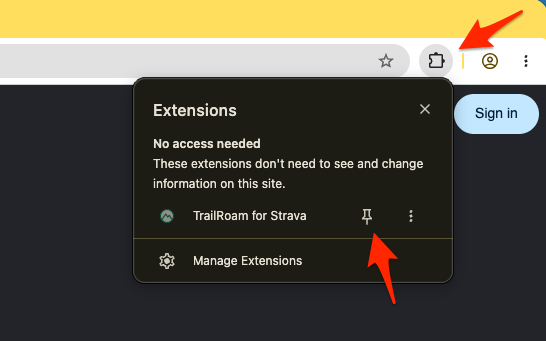
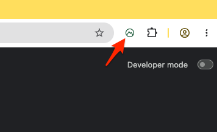

Step 1
Install & Pin
Click the Extensions icon in Chrome, then pin TrailRoam to your toolbar.
Step 2
Open the App
Click the TrailRoam extension icon to open the full app page.
Step 3
Sync Activities
Sync your activities from Strava. View routes, terrain, and stats.
Step 4
Explore & Plan
Export routes, explore trails, and plan your next adventure.